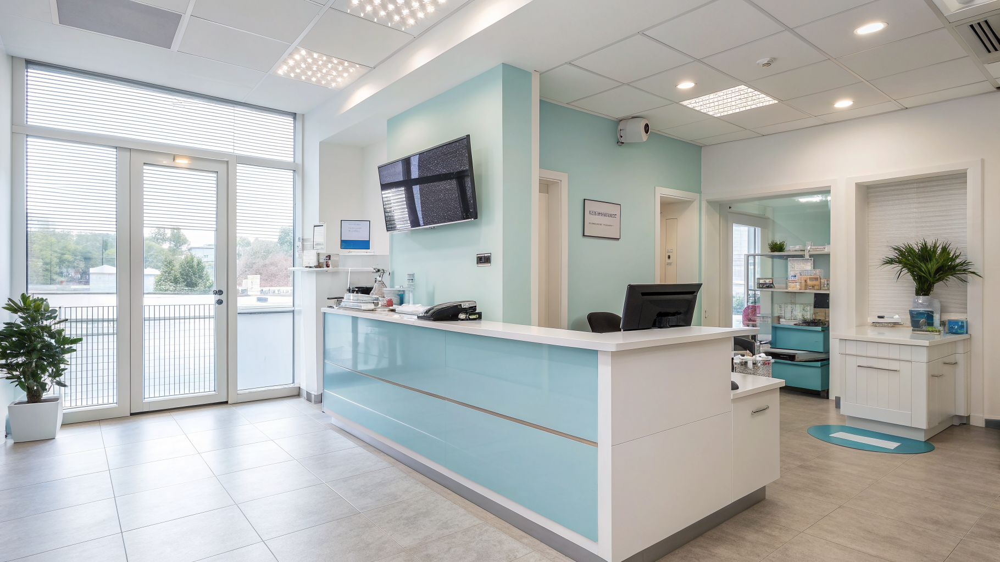

Automazione in Studi Dentistici: Come Superare il Divario Competitivo con Dentis AI

Ecco Perché Gli Studi Dentistici Devono Automare La Gestione delle Chiamate: Il Caso Dentis AI
- Il metodo tradizionale di gestione chiamate negli studi genera inefficienze e ansia nei pazienti.
- Senza automazione si perdono opportunità e cresce il sovraccarico del personale amministrativo.
- Dentis AI introduce una receptionist vocale AI attiva 24/7, migliorando la comunicazione e l’organizzazione.
Analisi approfondita della notizia e delle implicazioni operative
La gestione delle chiamate nel mondo odontoiatrico rappresenta uno snodo cruciale per l’efficienza operativa e la soddisfazione dei pazienti. Gli studi dentistici tradizionalmente si affidano a una gestione manuale, con segretarie che rispondono durante gli orari di apertura e lasciando molte chiamate fuori orario non presidiate. Questo comportamento è oggi inadeguato rispetto alle aspettative di rapidità e disponibilità da parte dei pazienti, soprattutto per situazioni di emergenza o richieste urgenti che possono presentarsi in qualsiasi momento, weekend compresi.
L’ansia dei pazienti dovuta alla difficoltà di ottenere risposte tempestive influisce negativamente sulla loro fedeltà e sulla reputazione dello studio. Inoltre, il carico di lavoro sulla segreteria cresce esponenzialmente, portando a rischi di errori, stress e turnover alto del personale. Per i titolari e direttori sanitari, questo si traduce in un costo invisibile ma significativo: perdita di potenziali appuntamenti, inefficienza nella pianificazione e difficoltà nel mantenere alta la qualità del servizio percepito.
Le conseguenze e i costi di non agire
Ignorare le esigenze moderne di automazione comporta ricadute pesanti sul piano operativo e strategico. In primo luogo, le chiamate perse fuori orario rappresentano un concreto danno da mancato fatturato. Ogni paziente non contattato immediatamente è una possibile perdita a favore della concorrenza che offre risposte più tempestive e disponibili.
In secondo luogo, l’ansia del paziente che non riceve risposte durante il weekend o in situazioni di urgenza si traduce in insoddisfazione e cattiva reputazione. Questo problema si riflette anche sui social, recensioni online e nel passaparola negativo, elementi che influenzano la decisione di nuovi potenziali clienti.
Infine, la segretaria tradizionale subisce un sovraccarico continuo: chiamate da gestire durante la fascia oraria di apertura, attività amministrative e organizzative, richieste urgenti da smistare manualmente. Questo non solo genera stress, ma anche costi indiretti legati a errori e inefficienze, aumenti salariali e ricorso a personale temporaneo per fronteggiare i picchi di domanda.
Come Dentis AI risolve il problema
Dentis AI nasce come soluzione tecnologica innovativa costruita specificamente per il settore odontoiatrico, con l’obiettivo di eliminare i limiti delle gestioni manuali. Serena, la receptionist telefonica vocale AI H24, è in grado di rispondere automaticamente a qualsiasi chiamata, anche fuori orario, con un tono empatico e rassicurante, riducendo immediatamente il livello di ansia dei pazienti.
La tecnologia di Dentis AI gestisce il triage delle urgenze, riconoscendo le chiamate che richiedono attenzione immediata e indirizzandole secondo protocolli predefiniti. La sincronizzazione con Google Calendar assicura che tutti gli appuntamenti, urgenti o ordinari, siano correttamente pianificati, prevenendo i conflitti o le doppie prenotazioni.
Inoltre, l’invio automatico di promemoria via WhatsApp aumenta il tasso di presenza agli appuntamenti e riduce le dimenticanze. Il risultato complessivo è una gestione fluida e professionale della comunicazione con il paziente, senza oneri aggiuntivi per il personale umano.
Questa automazione non solo ottimizza i processi, ma crea un vantaggio competitivo netto per gli studi che la adottano, allineandoli alle aspettative digitali di pazienti sempre più esigenti e abituati a servizi 24/7. Il costo contenuto del piano PRO (€149/mese) e la prova gratuita di 7 giorni senza carta di credito rendono l’investimento accessibile e a basso rischio.
| Gestione Tradizionale | Con Dentis AI |
|---|---|
| Risposta solo durante orario di segreteria | Receptionist AI attiva 24/7 senza pause |
| Chiamate urgenti gestite manualmente e rallentate | Triage urgenze automatico e immediato |
| Segretaria sovraccarica e alto rischio errori | Automazione del carico amministrativo e riduzione errori |
| Promemoria appuntamenti manuali o assenti | Invio automatico promemoria WhatsApp integrato |
| Rischio perdita appuntamenti e fatturato | Maggiore fidelizzazione e gestione appuntamenti |
💡 Ti è stato utile questo approfondimento?
Condividilo con un collega o un amico del settore Odontoiatri, Titolari di Studi Dentistici e Direttori Sanitari a cui potrebbe interessare!
FAQ - Domande frequenti
1. Serena, la receptionist AI, può gestire più linee contemporaneamente?
Sì, Dentis AI è progettata per rispondere contemporaneamente a più chiamate senza tempi di attesa, cosa impossibile da replicare con gestione manuale.
2. Come viene gestito il dato personale dei pazienti da Dentis AI?
Tutti i dati sono trattati secondo le normative GDPR con sistemi di crittografia e storage sicuri, garantendo la privacy e la sicurezza degli utenti.
3. È complicato integrare Dentis AI con il sistema attuale di gestione dello studio?
No, l’integrazione è semplice e rapida, grazie alle API con Google Calendar e sistemi di messaggistica come WhatsApp, con supporto tecnico incluso nella prova gratuita.
Inizia Subito
Prova Gratuita di 7 giorni senza carta di credito. Piano PRO a €149/mese.
Fonti Ufficiali e Risorse Esterne
Scopri l'Intelligenza Artificiale per la tua attività
Ottimizza i processi e aumenta le vendite con le soluzioni B2B di RM Studio.
Scopri Dentis AI